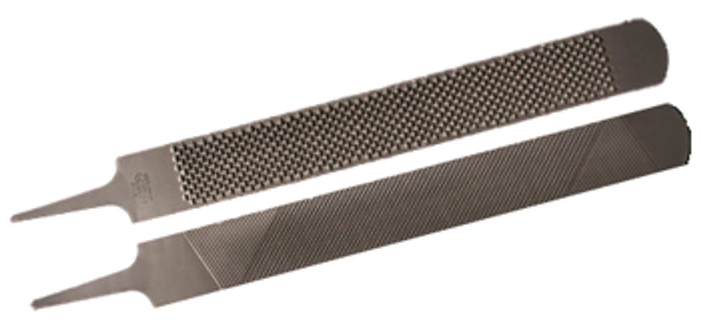

https://savethevowels.org/talks/make_writing_suck_less.html
It’s wonderful, enjoyable, and important to our species
… but the process, in modern times, sucks
“Do I want Semi-bold or bold here?”
“Wait, where’d that pagebreak go?”
“No damnit, keep indenting the old list, don’t make a new one”
“Why are you trying to turn this entire paragraph into a link?”
With pen and paper, you can do whatever you please
If you want bigger, write bigger
If you want smaller, write smaller
If you want a picture, draw one
“What you see is what you get†(WYSIWYG)
You generate text and then tell the tool what a chunk of text should look like by poking buttons
Over, and over, and over, hoping you do it consistently
Until the tool decides to do something else
“What you want is what you get†(WYWIWYG)
“Here’s what you asked for, if you’d like to make changes, I’ll make it again”
“You tell me what the text is and what role it plays using markup, and how each role should look, and I’ll make it happen”
“Give me a list of bibliography entries, and tell me where they’re referenced, and I’ll link them and format them”
“I could make this document into a Word Doc, a PDF, a website, a slideshow, whatever, just tell me what you want”
We want to think about what we’re writing, not how to make it so
We want our writing tools to get out of our way and let us write
Anything causing friction between your brain and the final draft should be eliminated

I am a free-and-open-source software zealot with substantial trust issues
I am also a Unix person, and tend to use that philosophy
Your mileage may vary
The Semantics of Formatting
Word and why it sucks
LaTeX and why it sucks
Markdown and why it sucks
Pandoc and why it’s awesome
My life’s workflow
Why is the text up there bigger?
Why is the ‘knowing that’ smaller and grayer?
Why are references formatted as they are?
What actual kinds of formatting do you need?
Text and Basic text variations (e.g. italic, bold)
Lists and enumerations
Sections, Subsections, Subsubsections
Included images with captions
Included citations, links, and footnotes
Breaks and boundaries and boxes
Every element of the text should have a reason for being one of these things
“Wait, why is that a link?”
“I don’t have enough information to find this citation”
“Why is this word bold?”
“Hold on, did we switch sections already?”
“This section isn’t in the table of contents? What does that mean?”
It should be consistent, meaningful, visible, and understandable
… and every single word should have a format that it should be
Doing formatting wrong hurts your argument
“Oh, I put the blue around the text and then I press the black B and it gets blacker!”
“Wow! I can change the font to squints Comical Sans MS. How fun!”
“Ooh, look at this, I can put a picture of a minion in the corner!”
“I’m going to make this the best bridge club poster Edna and Rosemary have ever seen.”
“I don’t know what my document should look like, here’s a platform to write it, then adjust it until it looks like what I think it should look like”
It is unquestionably powerful for exotic styling on a small amount of text
You know what your document needs to look like, or are told
Your documents are tens or hundreds of pages
It matters where the pictures show up on the page
You are not retired and do not have infinite time to press buttons
Thus…
So does GoogleDocs, LibreOffice, Scrivener, WordPerfect, and every other WYSIWYG editor
You don’t need the advantages that these tools offer
You need it to shut up and make your documents
Microsoft hates you, and has the goal to extract the exact largest amount of money they can from you before you rebel (🤡)
Lots of academics turn to LaTeX
Developed by Donald Knuth
You write the ‘source code’ for the finally rendered document
You write, write, write, and then ‘compile’ your document to see the form
Free, open-source, and community driven
In practice, use XeLaTeX which supports Unicode (🎉)
“Take this code mixed with text, make it into a pretty document”
The files you create are plaintext, and use no proprietary format
You don’t do anything besides generate content, and declare how that content should be formatted

Section numbering does not need humans
Compiling and formatting your bibliography based on citation codes is not a creative task
Tables of Contents are deterministic from section labels
Numbering Figures, Examples, and Diagrams is dumb
Pulling in tables from files generated in R is easy
Journals often provide TeX templates, so your document is automatically in the right format
You never need to ‘re-number’ anything, and will never ‘miss a citation’
All references can stay current, even when their referents change
You don’t need to manually move diagrams to fit the text, it happens for you
You can just change the document, and it’ll change all the rest
You can generate slides, diagrams, and more in LaTeX
You can create exams, letters, handouts, and hundreds of other things
It speaks Math as a first language, and syntax trees, and numbered examples, and…
It is all you actually need for document generation for the rest of your life
LaTeX can do The Thing, if you’re willing to put in The Time.
Not available for all platforms (e.g. iOS, Android)
Big, bulky downloads
Finicky installs
It’s often easier to use an online service (e.g. Overleaf)
Except on Overleaf
Or unless you have both versions of the .tex file and use file comparison tools

Folder containing images, bibliography info, included files, etc rather than one file
You can’t edit the ‘final product’
``Quotes use two different kinds of punctuation to be done right''
LaTeX crashes when you include a % or # without an escape
character \#
\ every time you
&Â %Â $Â #Â _Â {Â }Â ~Â ^Â \?Anything is possible, but everything is a bit more difficult
For writing a quick letter of recommendation, or website, or document, LaTeX is overkill
What if there was a way to do most of your writing in a non-sucking method, and use LaTeX commands only when you need more power?
Then put the output into whatever format you need?
Developed by John Gruber and Aaron Swartz in the early 2000s
Contains a set of basic commands allowing you to do most text formatting things quickly
Widely supported by Github, Discord, Google Docs, Gradescope, Jupyter, RStudio, Reddit, and many many more
Allows you to write plaintext which can easily be formatted however you’d like

It’s an open standard, which is available in a number of places
It is web-native, allowing linking and playing well with CSS (Cascading Style Sheets)
It handles the most common formatting operations
It’s readable as plaintext, but can be easily converted to other formats
It works with any language which supports the symbol set
You’re basically writing words, but occasionally adding bits
As long as you have a full keyboard, and a keyboard-based editor, you never have to move the mouse
Formatting adds 1-5 keystrokes to a word
You never need to ‘escape’ a character
Files are in the tens of kilobytes
Documents? Markdown
Letters of recommendation? Markdown
Websites? Markdown
This slideshow? Markdown
My brain naturally writes in Markdown
Jupyter Notebooks and RStudio/RMarkdown support it out of the box
Obsidian.md is what I use for all the writing I control
There are hundreds of other markdown editor apps
You can edit it using a boring command line text editor
vim and emacs both have strong packages
for Markdown supportNot all features are universally supported (e.g. footnotes)
There are some non-standard specifications (e.g. Github flavored markdown)
It simply doesn’t have some formatting things we want
Tables and strikethrough are unreliably implemented
across platforms
Colors and image styles require external CSS
References aren’t a thing
You only get five levels of Section Heading
Math formatting isn’t universally allowed/respected
You can write all this wonderful semantically formatted text
Like LaTeX, your documents need to be compiled to be pretty
Since Markdown is just a set of format specifiers, it’s easy to turn into something else
Technically, you could just convert it to any kind of formatting convention
Written by John MacFarlane in 2006
All it does it turn document formats from one thing to another
Takes as input epub, HTML, JSON, LaTeX, Markdown, ODT, Office XML, Org Mode, Wiki Markup (among many more)
Outputs the document as epub, HTML, InDesign, JSON, LaTeX, man, Markdown, ODT, Office XML, Org Mode, PDF, Plaintext, RTF, Slideshows (reveal, Beamer), Wiki
That’s all it does
“Oh, we need that TeX article in Word format†“Done.”
“Could you make your slides into an HTML single page sheet for note taking?”
“I have a markdown file, but I want it pretty and formatted like TeX”
“I want to create all of my syllabi using markdown, and apply a custom format which makes them pretty HTML”
You can write mostly in Markdown, but intersperse a bit of HTML or LaTeX
Pandoc will just see it, and pass it through
If you convert to a format where the additional stuff is not supported, you’ll just see the code
You can write mostly in Markdown, and then use LaTeX where you absolutely need LaTeX’s power
98% of the document is in a formatting language which is fast and easy to write
2% of the document does the ‘power user’ stuff
You can use inline references, citations, and links to prior sections
You get all of the power of LaTeX, but you can write fluidly
This allowed me to write ~70% of my dissertation on an iPad on a 1.5 hour bus ride to and from work
I can revise a paper I’m working on from my phone
You just compile it to LaTeX with Pandoc, and PDF it
The only raw LaTeX I use is for writing Multiple Choice Exams
“Use this tex template to make this text a letter of recommendation”
“Use this HTML template to make a page for my website”
“This is a general document, just make a generic PDF”
“Everything in this folder is slides, so stick my reveal.js header and footer to either side of it”
It’s a command line tool, which might suck a little for somebody for five minutes
Install it using brew on Macs, using your package
manager on Linux, and there’s a Windows installer
too
You’ll also need a working LaTeX install to make it work for PDFs
But once it’s set up, it’s beautiful
Using Obsidian
Things that just need written down digitally stay in Obsidian
Different folders for ‘talks’, ‘docs’, ‘letters’, ‘offline’, ‘web’ that need to be shared
Different templates for generic documents, websites, letters, slideshows, and more
It’s very easy to create a new document and have a pretty version of it quickly
It checks for changes in each of those folders
It creates new html and PDFs of everything changed in
docs and offline with a generic template
It renders changed things in web using my website
HTML template and uploads them
It creates new PDFs of everything changed in letters
with an academic letter template
It creates reveal.js slideshows and handouts for everything
changed in talks
I sit, I write
Formatting is as I desire, automatic, and sensible for the kind of document
I can write a letter of recommendation using speech-to-text on my phone while walking home from the post office, and it’s a formatted PDF when I get home
And you change the format in one place, and all your documents change to match
You spend no time on managing documents, formatting, or otherwise, just writing